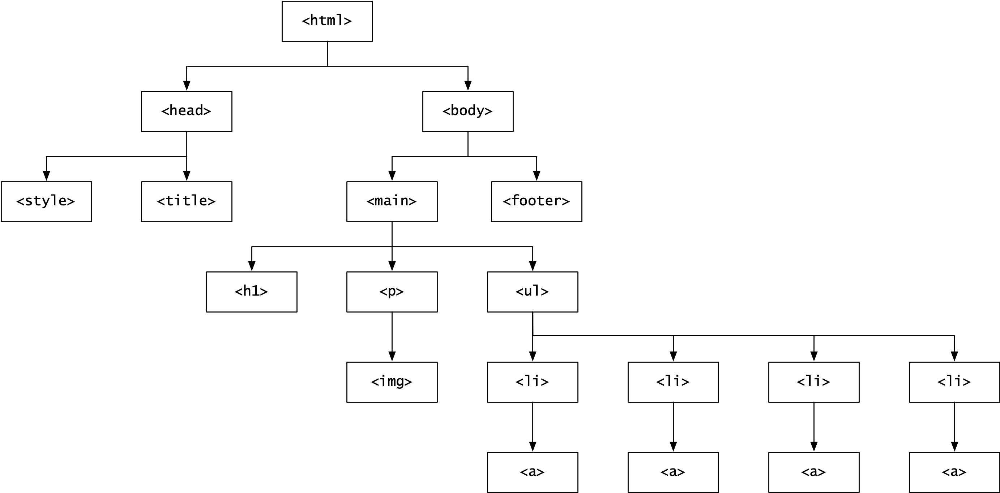

HTML Documents Represent a Tree
HTML documents describe a tree and seeing this tree / thinking in terms of this tree is key to understanding what CSS is up to. View the source of this page and compare it to the image below. Can you see how they represent the same tree?

Check out with-header.html for an example of onw way to get a nav header at the top of the page. Meanwhile, here are some TV shows I like: